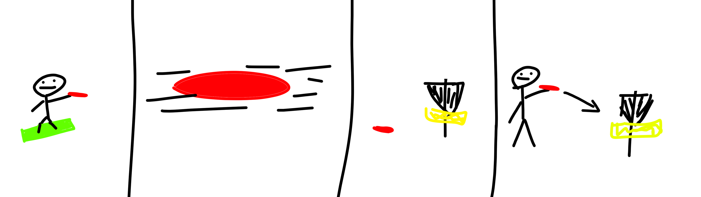

Frisbeegolf on laji, joka yhdistää frisbeen heittelyn ja golfin parhaat puolet. Laji on helppo aloittaa ja se sopii kaikenikäisille ja -kuntoisille. Frisbeegolf on myös erittäin edullinen harrastus, sillä kiekot maksavat 10-20 euroa ja ratojen pelaaminen on usein ilmaista.
Alla esimerkki, miten pelataan yksi frisbeegolfväylä.
